Step 1
A clean baseline
Both observers receive 203.0.113.0/24 over both providers and pick Provider B's shorter path. Nobody validates anything yet: the RPKI pieces exist, but no router talks to a validator.

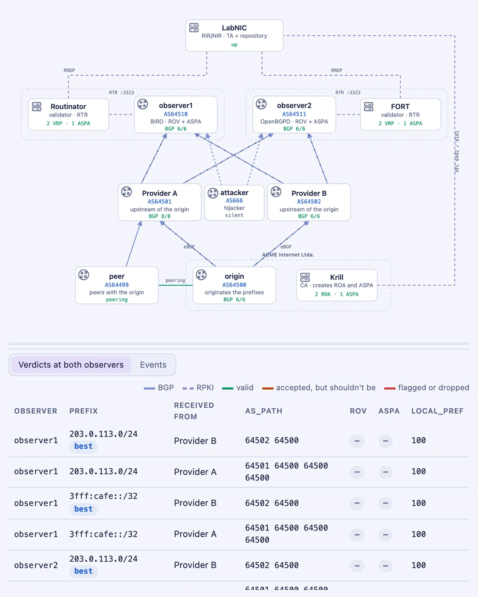
Real BGP routers, two RPKI validators, a CA and a simulated registry, all in containers. A guided story shows what origin validation catches, what slips past it, and what ASPA adds.
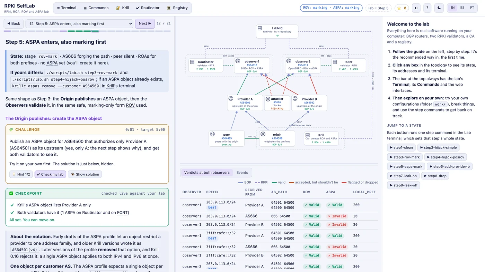
Everything is real software, not a simulation. Two observers receive the same announcements and RPKI objects, each with a different router and validator, so you can compare two implementations at every step.
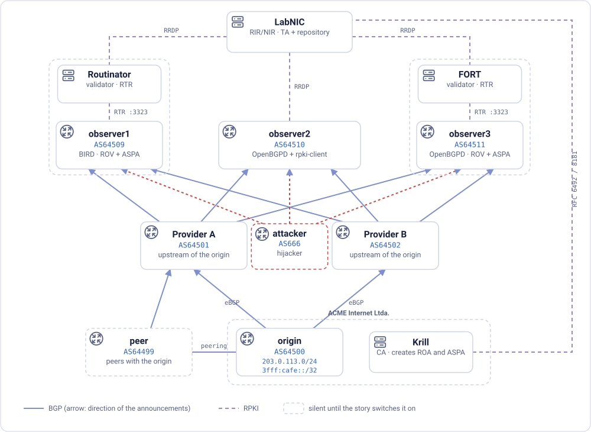
The guide is one story: three attacks, and which check stops each one. AS64500 is multihomed and prefers Provider B; it prepends twice towards Provider A, its backup. Two observers receive its prefix over both providers. The screenshots below are the panel at each step.
Both observers receive 203.0.113.0/24 over both providers and pick Provider B's shorter path. Nobody validates anything yet: the RPKI pieces exist, but no router talks to a validator.

AS666 announces the origin's prefix as its own. Its path, 666, is one hop long against two and four, and nothing else tells the routes apart. The attacker's links turn orange: both observers are using its route.
Without validation, BGP has no way to tell a hijack from the real thing.
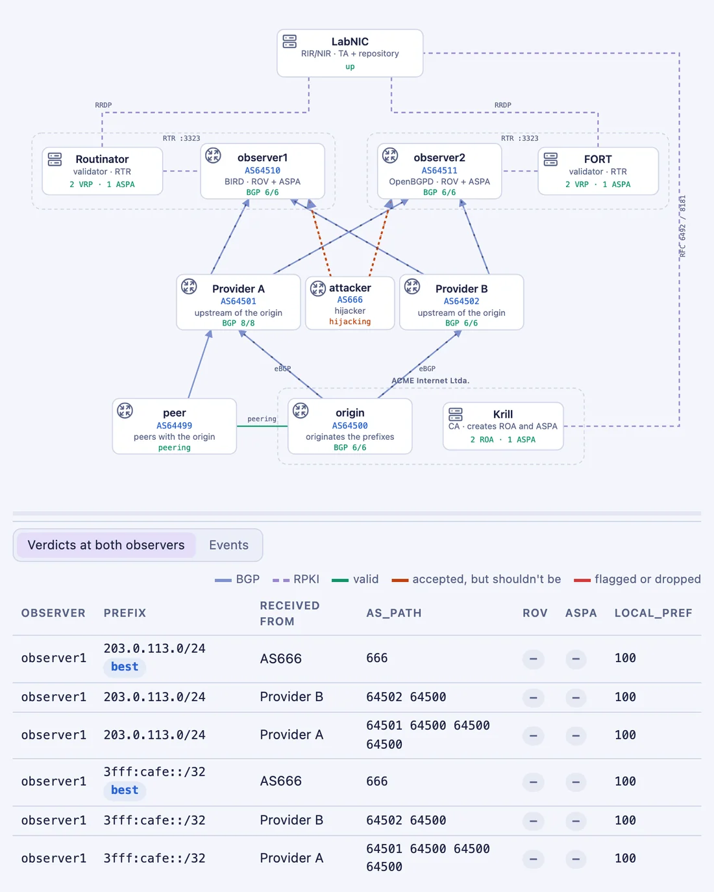
The origin creates its ROAs in Krill, and the observers deploy origin validation in its safe first form: invalid routes are only marked and demoted. The hijack becomes Invalid with local_pref 10, and Provider B's path is selected again.
Deploying ROV takes three pieces on any router: an RTR session, a test on every route, and an action on the result.
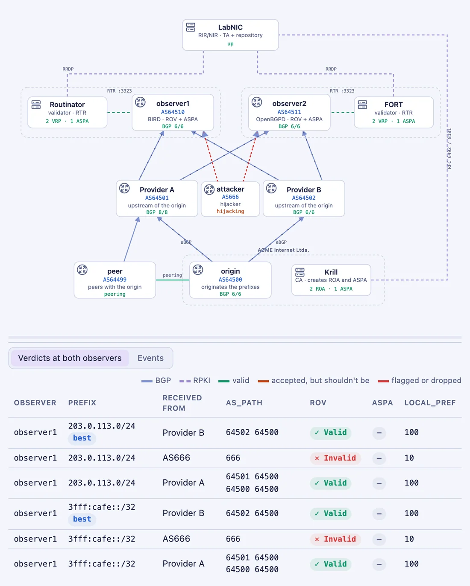
AS666 now announces 666 64500, writing the real origin at the end of the path. ROV only checks the last AS, so it says Valid, and the forged route wins the tie with Provider B.
Origin validation can't tell two paths apart when the origin is the same.
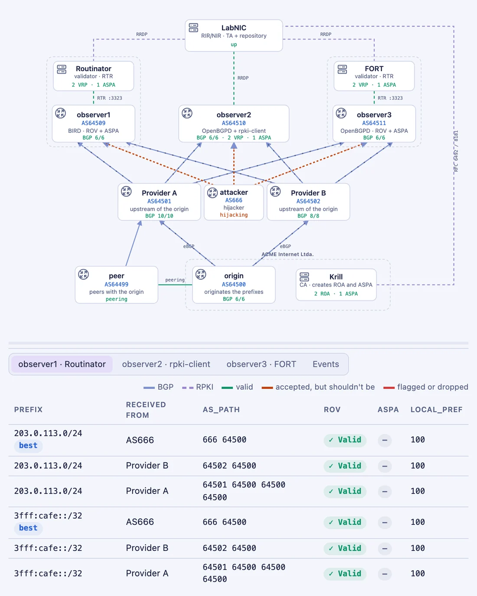
The origin publishes an ASPA object listing only Provider A, and the observers deploy ASPA verification. The forged path becomes Invalid: the hop 64500→666 was never authorized. But so does Provider B's legitimate path, and the observers fall back to the backup.
An ASPA object must list every provider. Forgetting one diverts the origin's own traffic.
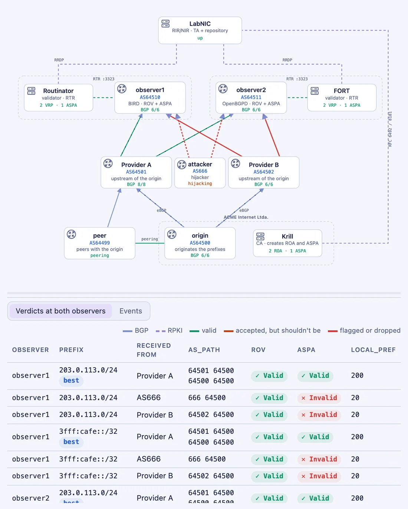
Adding Provider B to the object fixes it: both legitimate paths are Valid again and Provider B is selected, while the forged path stays demoted. The fix reaches the routers through republication and revalidation alone.
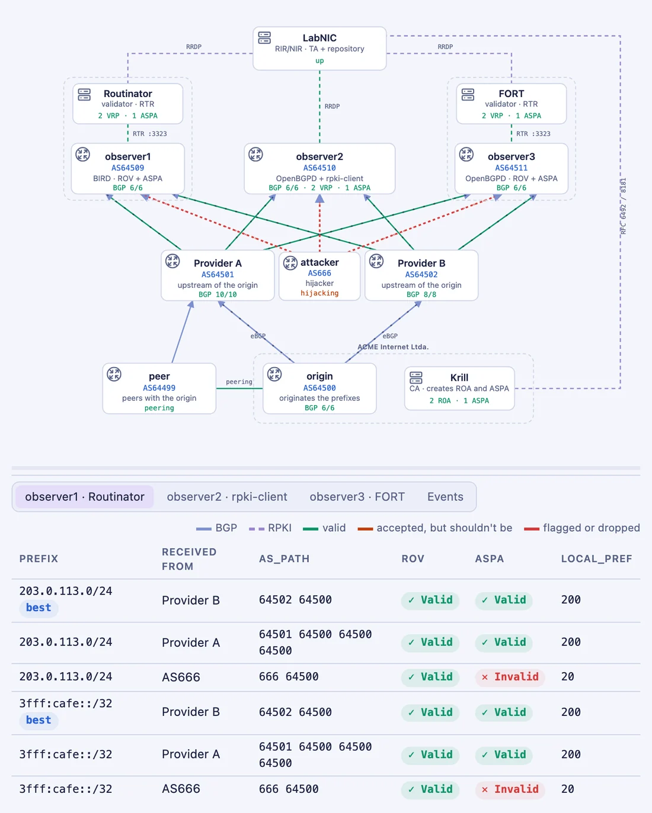
A legitimate peer passes the origin's routes, learned over private peering, on to Provider A. Nothing is forged: 64501 64499 64500 is Valid for ROV and Invalid for ASPA, because 64499 is not one of the origin's providers.
In a leak nobody lies about the origin; what's wrong is where the route went. ROV can't see it, ASPA can.
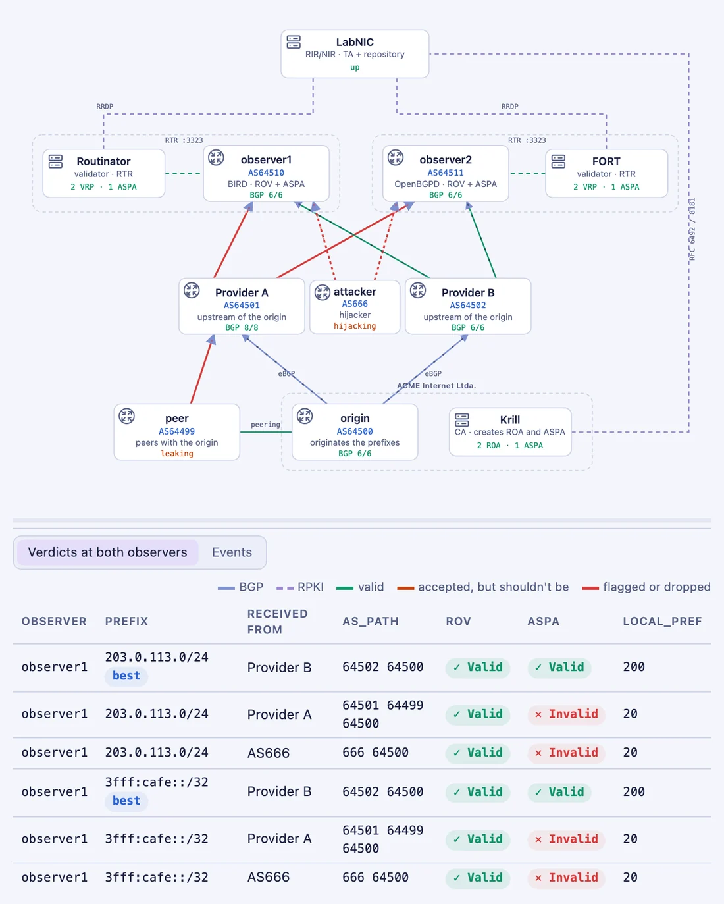
Both checks switch from marking to dropping, the way a production router is configured. The forged and the leaked routes disappear. Provider A's own path is still missing, though: Provider A keeps advertising the leak instead, and no policy on the observers can change that.
Marking only helps while a valid alternative exists. Dropping is what protects the network.
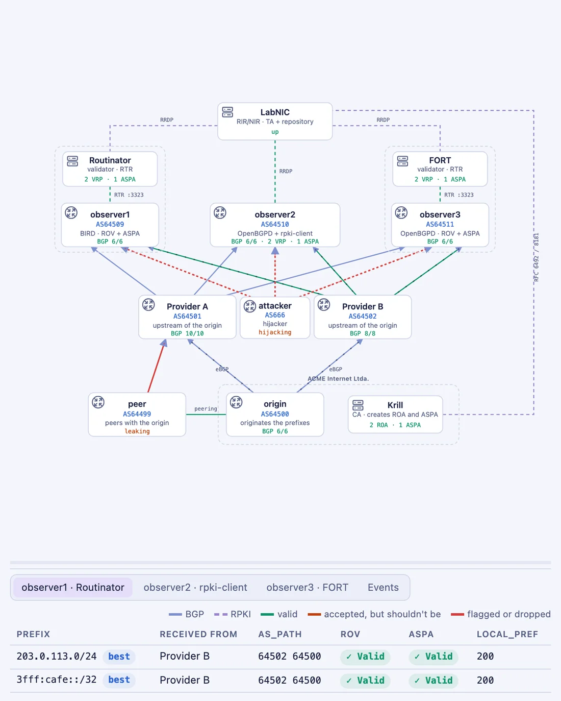
The peer fixes its export policy and Provider A's own path comes back. The observers stay fully deployed, with ROV and ASPA both dropping.
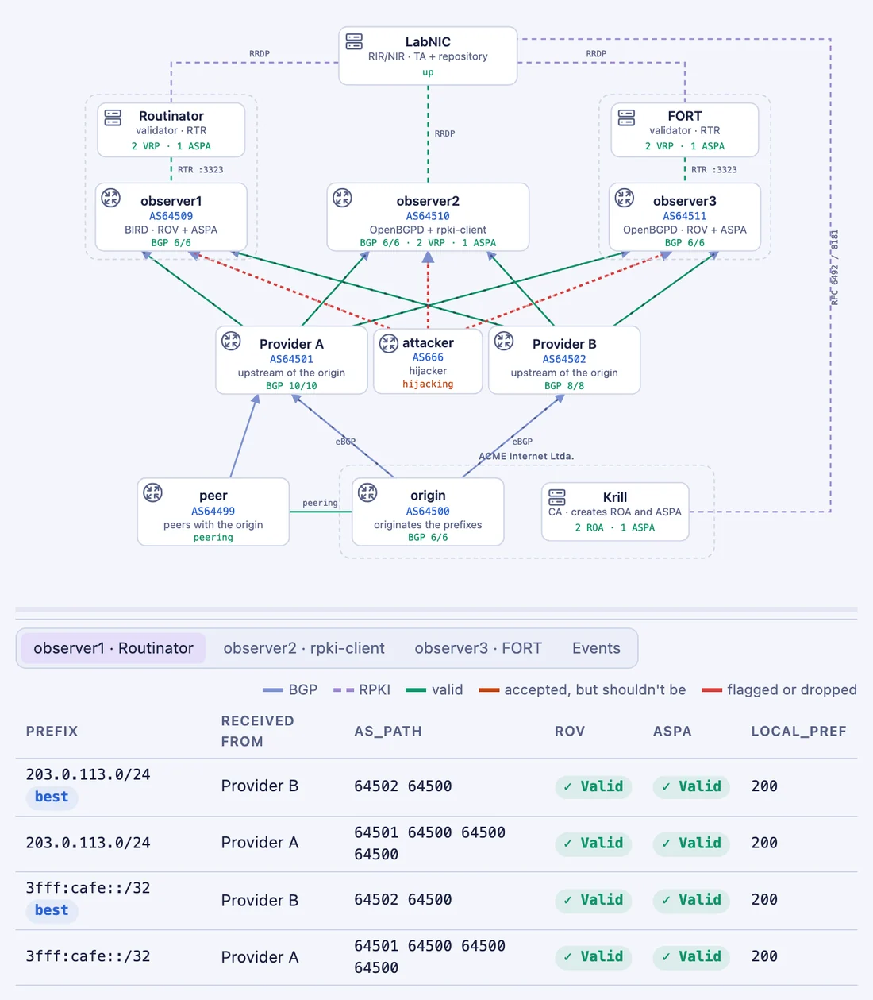
| Attack | AS_PATH | ROV | ASPA |
|---|---|---|---|
| Naive hijack | 666 | catches it | nothing to check |
| Forged path | 666 64500 | fooled | catches it |
| Route leak | 64501 64499 64500 | can't see it | catches it |
Built for hands-on RPKI courses, and usable by anyone who wants to study on their own.
English, Spanish and Portuguese. Every command block says where it runs and opens the right terminal.
Some steps hide their solution behind hints and a timer; "Check my lab" looks at the lab's real state.
They tick themselves as your lab reaches each step, and any step command puts the lab back on track.
Create the CA in Krill and play both sides of the delegation with the simulated registry.
A work/ folder to write your own ROV and ASPA configuration and load it on the routers.
Upstream vs downstream (and where BIRD and OpenBGPD disagree), maxLength, and a look inside RTR.
git clone https://github.com/moreiras/rpki-selflab.git cd rpki-selflabor download the source from the latest release.
./scripts/lab.sh up
Each release also has a virtual machine with everything inside (amd64 and arm64), with its own desktop, browser and terminal. Details in vm/README.md.
The full guide is also readable on GitHub: guide/GUIDE.en.md.